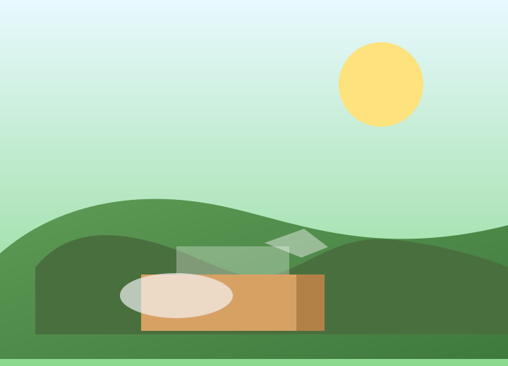

Why farmers win
Direct connections, transparent pricing, and faster decisions help farmers keep more of the value they create.
Our hackathon project connects farmers directly to better market choices, delivers weather alerts, and checks soil health in a simple, clean homepage.
What we do
Farmers can ask the voice assistant, use text chat, and view live weather or soil recommendations for their field.

We create farmer-first tools that make it easier to trade, plan, and grow without paying extra to middlemen.
Direct connections, transparent pricing, and faster decisions help farmers keep more of the value they create.
By offering market guidance, weather insights, and soil checks in one clean interface, smallholders can plan with confidence.
Keep the design simple, the information useful, and the interaction friendly for every farmer in the demo.
Farmers need fair access to buyers and tools to understand harvest, soil, and weather conditions without added costs.
Link farmers with buyers directly and reduce the cost of commissions and agent fees.
Show better pricing ideas so farmers can negotiate more confidently and avoid unfair middlemen rates.
Weather and soil data help farmers choose the best time to sow, irrigate, and harvest with lower risk.
Talk or type to get farming advice, ask about weather, soil, and reducing middleman dependency.
Enter your location, then fetch weather or soil guidance for your farm.
Reach out to the team or continue using the assistant for quick farming guidance.
farmersfirst@example.com
Hackathon demo � farmer support tool
Use voice for hands-free chat, or type if the browser does not support speech recognition.